4.1 枚举服务
枚举是一类程序，它允许用户从一个网络中收集某一类的所有相关信息。本节将介绍DNS枚举和SNMP枚举技术。DNS枚举可以收集本地所有DNS服务和相关条目。DNS枚举可以帮助用户收集目标组织的关键信息，如用户名、计算机名和IP地址等，为了获取这些信息，用户可以使用DNSenum工具。要进行SNMP枚举，用户需要使用SnmpEnum工具。SnmpEnum是一个强大的SNMP枚举工具，它允许用户分析一个网络内SNMP信息传输。
4.1.1 DNS枚举工具DNSenum
DNSenum是一款非常强大的域名信息收集工具。它能够通过谷歌或者字典文件猜测可能存在的域名，并对一个网段进行反向查询。它不仅可以查询网站的主机地址信息、域名服务器和邮件交换记录，还可以在域名服务器上执行axfr请求，然后通过谷歌脚本得到扩展域名信息，提取子域名并查询，最后计算C类地址并执行whois查询，执行反向查询，把地址段写入文件。本小节将介绍使用DNSenum工具检查DNS枚举。在终端执行如下所示的命令：
root@kali:~# dnsenum --enum benet.com
dnsenum.pl VERSION:1.2.3
第4章 信息收集
Warning: can't load Net::Whois::IP module, whois queries disabled.
----- benet.com -----
Host's addresses:
__________________
benet.com. 86400 IN A 192.168.41.131
benet.com. 86400 IN A 127.0.0.1
Name Servers:
______________
benet.com. 86400 IN A 127.0.0.1
benet.com. 86400 IN A 192.168.41.131
www.benet.com. 86400 IN A 192.168.41.131
Mail (MX) Servers:
___________________
mail.benet.com. 86400 IN A 192.168.41.2
Trying Zone Transfers and getting Bind Versions:
输出的信息显示了DNS服务的详细信息。其中，包括主机地址、域名服务地址和邮件服务地址。如果幸运的话，还可以看到一个区域传输。
使用DNSenum工具检查DNS枚举时，可以使用dnsenum的一些附加选项，如下所示。
- --threads [number]：设置用户同时运行多个进程数。
- -r：允许用户启用递归查询。
- -d：允许用户设置WHOIS请求之间时间延迟数（单位为秒）。
- -o：允许用户指定输出位置。
- -w：允许用户启用WHOIS请求。
4.1.2 DNS枚举工具fierce
fierce工具和DNSenum工具性质差不多，其fierce主要是对子域名进行扫描和收集信息的。使用fierce工具获取一个目标主机上所有IP地址和主机信息。执行命令如下所示：
root@kali:~# fierce -dns baidu.com
DNS Servers for baidu.com:
ns2.baidu.com
ns7.baidu.com
dns.baidu.com
ns3.baidu.com
ns4.baidu.com
Trying zone transfer first…
Testing ns2.baidu.com
Request timed out or transfer not allowed.
Testing ns7.baidu.com
Request timed out or transfer not allowed.
Testing dns.baidu.com
Request timed out or transfer not allowed.
Testing ns3.baidu.com
Request timed out or transfer not allowed.
Testing ns4.baidu.com
Request timed out or transfer not allowed.
Unsuccessful in zone transfer (it was worth a shot)
Okay, trying the good old fashioned way… brute force
Checking for wildcard DNS…
** Found 94050052936.baidu.com at 123.125.81.12.
** High probability of wildcard DNS.
Now performing 2280 test(s)…
10.11.252.74 accounts.baidu.com
172.22.15.16 agent.baidu.com
180.76.3.56 antivirus.baidu.com
10.81.7.51 ba.baidu.com
172.18.100.200bd.baidu.com
10.36.155.42 bh.baidu.com
10.36.160.22 bh.baidu.com
10.11.252.74 accounts.baidu.com
……省略部分内容
61.135.163.0-255 : 1 hostnames found.
61.135.165.0-255 : 1 hostnames found.
61.135.166.0-255 : 1 hostnames found.
61.135.185.0-255 : 1 hostnames found.
Done with Fierce scan: http://ha.ckers.org/fierce/
Found 133 entries.
Have a nice day.
输出的信息显示了baidu.com下所有的子域。从倒数第2行，可以看到总共找到133个条目。执行以上命令后，输出的内容较多。但是由于篇幅的原因，部分内容使用省略号（……）取代。
用户也可以通过提供一个单词列表执行相同的操作，执行命令如下所示：
root@kali:~# fierce -dns baidu.com -wordlist hosts.txt /tmp/output.txt
4.1.3 SNMP枚举工具Snmpwalk
Snmpwalk是一个SNMP应用程序。它使用SNMP的GETNEXT请求，查询指定的所有OID（SNMP协议中的对象标识）树信息，并显示给用户。本小节将演示Snmpwalk工具的使用。
【实例4-1】使用Snmpwalk命令测试Windows主机。执行命令如下所示：
root@kali:~# snmpwalk -c public 192.168.41.138 -v 2c
iso.3.6.1.2.1.1.1.0 = STRING: "Hardware: x86 Family 6 Model 42 Stepping 7 AT/AT COMPATIBLE - Software: Windows Version 6.1 (Build 7601 Multiprocessor Free)"
iso.3.6.1.2.1.1.2.0 = OID: iso.3.6.1.4.1.311.1.1.3.1.1
iso.3.6.1.2.1.1.3.0 = Timeticks: (49046) 0:08:10.46
iso.3.6.1.2.1.1.4.0 = ""
iso.3.6.1.2.1.1.5.0 = STRING: "WIN-RKPKQFBLG6C"
iso.3.6.1.2.1.1.6.0 = ""
iso.3.6.1.2.1.1.7.0 = INTEGER: 76
iso.3.6.1.2.1.2.1.0 = INTEGER: 19
iso.3.6.1.2.1.2.2.1.1.1 = INTEGER: 1
iso.3.6.1.2.1.2.2.1.1.2 = INTEGER: 2
iso.3.6.1.2.1.2.2.1.1.3 = INTEGER: 3
iso.3.6.1.2.1.2.2.1.1.4 = INTEGER: 4
iso.3.6.1.2.1.2.2.1.1.5 = INTEGER: 5
iso.3.6.1.2.1.2.2.1.1.6 = INTEGER: 6
……
iso.3.6.1.2.1.2.2.1.1.16 = INTEGER: 16
iso.3.6.1.2.1.2.2.1.1.17 = INTEGER: 17
iso.3.6.1.2.1.2.2.1.1.18 = INTEGER: 18
iso.3.6.1.2.1.2.2.1.1.19 = INTEGER: 19
iso.3.6.1.2.1.2.2.1.2.1 = Hex-STRING: 53 6F 66 74 77 61 72 65 20 4C 6F 6F 70 62 61 63
6B 20 49 6E 74 65 72 66 61 63 65 20 31 00
iso.3.6.1.2.1.2.2.1.2.2 = Hex-STRING: 57 41 4E 20 4D 69 6E 69 70 6F 72 74 20 28 53 53
54 50 29 00
iso.3.6.1.2.1.2.2.1.2.3 = Hex-STRING: 57 41 4E 20 4D 69 6E 69 70 6F 72 74 20 28 4C 32
54 50 29 00
iso.3.6.1.2.1.2.2.1.2.4 = Hex-STRING: 57 41 4E 20 4D 69 6E 69 70 6F 72 74 20 28 50 50
……
iso.3.6.1.2.1.55.1.8.1.5.11.16.254.128.0.0.0.0.0.0.149.194.132.179.177.254.120.40 = INTEGER: 1
iso.3.6.1.2.1.55.1.8.1.5.12.16.254.128.0.0.0.0.0.0.0.0.94.254.192.168.41.138 = INTEGER: 1
iso.3.6.1.2.1.55.1.8.1.5.13.16.32.1.0.0.157.56.106.184.52.243.8.98.63.87.214.117 = INTEGER: 1
iso.3.6.1.2.1.55.1.8.1.5.13.16.254.128.0.0.0.0.0.0.52.243.8.98.63.87.214.117 = INTEGER: 1
iso.3.6.1.2.1.55.1.9.0 = Gauge32: 9
iso.3.6.1.2.1.55.1.10.0 = Counter32: 0
以上输出的信息显示了Windows主机192.168.41.138上的所有信息。
用户也可以使用snmpwalk命令枚举安装的软件。执行命令如下所示：
root@kali:~# snmpwalk -c public 192.168.41.138 -v 1 | grep ftp
输出信息如下所示：
iso.3.6.1.2.1.25.4.2.1.5.3604 = STRING: "-k ftpsvc"
输出的信息表示192.168.41.138主机安装了ftp软件包。
使用Snmpwalk工具也可以枚举目标主机上打开的TCP端口。执行命令如下所示：
root@kali:~# snmpwalk -c public 192.168.41.138 -v 1 | grep tcpConnState | cut -d "." -f6 | sort -nu
21
25
80
443
输出信息显示了192.168.41.138主机打开的端口。如21、25、80和443，总共打开了4个端口号。
4.1.4 SNMP枚举工具Snmpcheck
Snmpcheck工具允许用户枚举SNMP设备的同时将结果以可读的方式输出。下面将演示该工具的使用。使用Snmpcheck工具通过SNMP协议获取192.168.41.138主机信息。执行命令如下所示：
root@kali:~# snmpcheck -t 192.168.41.138
该命令输出信息较多，下面依次讲解每个部分。首先输出的是枚举运行信息。
snmpcheck.pl v1.8 - SNMP enumerator
Copyright (c) 2005-2011 by Matteo Cantoni (www.nothink.org)
[*] Try to connect to 192.168.41.138
[*] Connected to 192.168.41.138
[*] Starting enumeration at 2014-04-19 15:28:58
（1）获取系统信息，如主机名、操作系统类型及架构。结果如下所示：
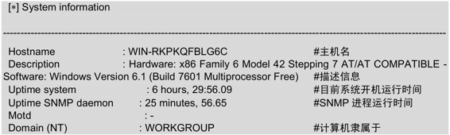
从输出的信息中可以看到该系统的主机名为WIN-RKPKQFBLG6C、x86架构和Windows系统等信息。
（2）获取设备信息，如设备ID号、类型和状态等。结果如下所示：
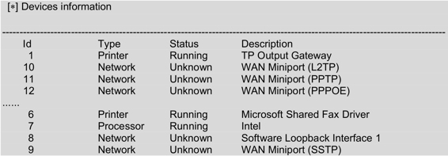
以上信息显示了该系统中所有设备相关信息，如打印设备、网络设备和处理器等。
（3）获取存储信息，如设备id、设备类型和文件系统类型等。结果如下所示：
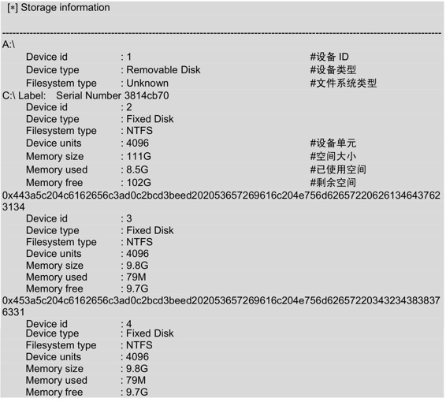
该部分显示了系统中所有磁盘。由于篇幅的原因，这里只贴了A和C盘的存储信息。这里以C盘为例，介绍一下输出的信息，包括设备类型、文件系统类型、空间大小、已用空间大小和剩余空间大小等。
（4）获取用户账户信息。结果如下所示：
[*] User accounts
-----------------------------------------------
Administrator
Guest
输出的信息显示了该系统中的有两个用户，分别是Administrator和Guest。
（5）获取进程信息，如进程ID、进程名和进程类型等。结果如下所示：
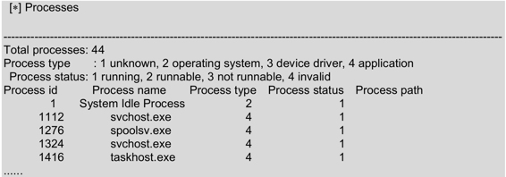
输出信息的第一行表示该系统中共有44个进程。由于篇幅的原因，这里只列出了前几个运行的进程。第二行指定了进程类型：1表示不知名；2表示操作系统；3表示设备驱动；4表示应用程序。第三行指定了进程的状态：1表示正在运行；2表示可以运行；3表示不能运行；4表示无效的。第四行的内容是以列的形式显示：第一列表示进程ID；第二列表示进程名；第三列表示进程状态；第四列表示进程路径。
（6）获取网络信息，如TTL值、TCP段和数据元。结果如下所示：
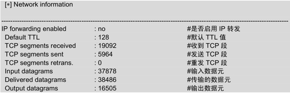
以上信息显示了该目标系统中网络的相关信息，如默认TTL值、收到TCP段、发送TCP段和重发TCP段等。
（7）获取网络接口信息，如接口状态、速率、IP地址和子网掩码等。结果如下所示：
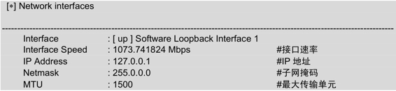
以上信息中显示了loopback接口的相关信息。包括它的速率、IP地址、子网掩码和最大传输单元。
（8）获取路由信息，如目标地址、下一跳地址、子网掩码和路径长度值。结果如下所示：
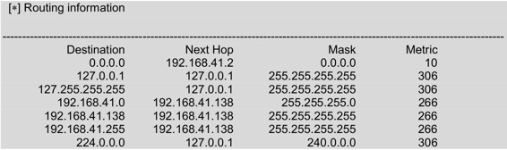
以上信息表示目标系统的一个路由表信息。该路由表包括目的地址、下一跳地址、子网掩码及路径长度值。
（9）获取网络服务信息，如分布式组件对象模型服务、DHCP客户端和DNS客户端等。结果如下所示：
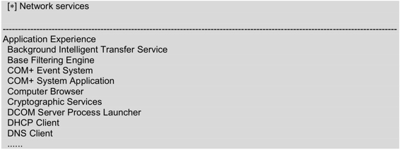
以上信息显示了目标主机中所安装的服务。由于篇幅的原因，只列出了一少部分服务。
（10）获取监听的TCP端口，如监听的TCP端口号有135、495149513和139等。结果如下所示：
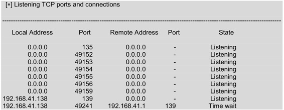
以上信息表示两台主机建立TCP连接后的信息。包括本地地址、本机端口、远程主机地址、远程主机端口及连接状态。
（11）获取监听UDP端口信息，如监听的UDP端口有123、161、4500、500和5355等。结果如下所示：
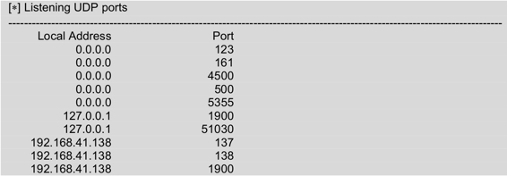
以上信息表示目标主机中已开启的UDP端口号。
（12）获取软件组件信息，如Visual C++ 2008。显示结果如下所示：
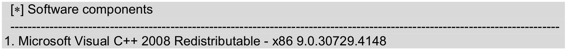
以上信息表示该主机中安装了Visual C++ 2008类库。
（13）获取Web服务信息，如发送的字节数、文件数和当前匿名用户等。结果如下所示：
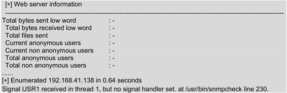
以上信息显示了关于Web服务的信息。最后显示了枚举主机192.168.41.138共用的时间。
4.1.5 SMTP枚举工具smtp-user-enum
smtp-user-enum是针对SMTP服务器的25端口，进行用户名枚举的工具，用以探测服务器已存在的邮箱账户。在SMTP服务上启动用户的SMTP枚举。执行命令如下所示：
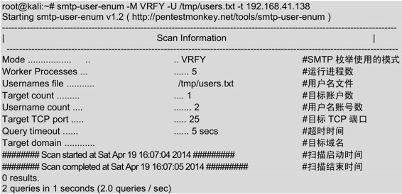
输出的信息显示了扫描192.168.41.138主机的详细信息，包括模式、运行进程、用户名文件、用户数和TCP端口等。